BATALLA DEL 5 DE MAYO DE 1862
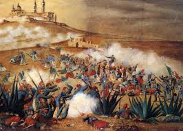
MI SEGUNDA APLICACION
Eva solis hdz
TEMA 1
BATALLA
DE PUEBLA
RESUMEN
Después de los excesos de la dictadura santannista y las batallas de la guerra de Reforma, México se encontraba en bancarrota sin poder saldar sus deudas con los países acreedores.
En 1862 las armadas de España, Inglaterra y Francia desembarcaron en Veracruz dispuestas a cobrar sus préstamos. Después de negociar con el representante de México España e Inglaterra se retiraron.
Napoleón III, Emperador del Segundo Imperio Francés quería establecer una monarquía favorable para Francia, y asimismo, quería disolver el Gobierno Constitucional Mexicano.
Las fuerzas francesas al mando del general Lorencez se componían de (7.000) siete mil soldados que salieron hacia la ciudad de México.
El Presidente Juárez le dio la orden al General Ignacio Zaragoza de detener el avance de las fuerzas armadas francesas en los fuertes de Loreto y Guadalupe cerca de la ciudad de Puebla. Zaragoza contaba con sólo (2,000) dos mil hombres.
El 5 de mayo de 1862, los cañones resonaron y los rifles dispararon y más de (1,000) mil soldados franceses cayeron muertos. Los mexicanos habían ganado la batalla, pero no la guerra. Sin embargo, esta fecha es la que simboliza el valor mexicano ante una armada tan formidable.
Derrotadas en la batalla de Puebla, se refugiaron en Orizaba mientras esperaban refuerzos para proseguir la ofensiva. Mientras tanto, Luis Bonaparte, el ambicioso sobrino de Napoleón I, se alió con grupos de conservadores mexicanos para imponer un rey europeo en el país.
Para junio de 1864, Maximiliano de Habsburgo y su esposa Carlota (austriacos) llegaron a la ciudad de México para tomar posesión del recién formado Imperio Mexicano y fueron coronados como el Emperador y la Emperatriz de México.
Los republicanos, al mando de Benito Juárez, no aceptaron la intervención extranjera. Se refugiaron en el norte del país y les pidieron ayuda a los californianos y a otras sociedades mexicano-norteamericanas con financiamiento y voluntarios para la lucha.
Estados Unidos al término de su guerra civil, presionó a Francia para que se retiraran. El retiro de las fuerzas francesas en 1867 fue obligado. Maximiliano, indefenso, tuvo que recurrir a sus antiguos aliados conservadores, los generales Miramón y Mejía, pero ya era demasiado tarde.
Derrotados en Querétaro, fueron fusilados en el cerro de las Campanas.
SUBTEMA 1.1
¿QUE ORIGINO EL PROBLEMA?
Debido principalmente a la cantidad de deudas, Francia, Inglaterra y España subscribieron el Convenio de Londres, por la cual se comprometieron a intervenir por el uso de la fuerza en México para reclamar sus derechos como acreedores, mientras tanto el Presidente Benito Juárez declaro suspendidos los compromisos adquiridos y aplazó pagar la deuda a las naciones europeas. Tras desembarcar en Veracruz, España e Inglaterra aceptaron las explicaciones mexicanas dadas en los Convenios de la Soledad, los cuales tenían como fundamento, el respeto a la soberanía territorial, el reconocimiento de las naciones acreedoras al Estado Mexicano, la entrada al terreno de las negociaciones para llegar a acuerdos en común, que beneficiaría tanto a la República Mexicana, como a los intereses de las potencias invasoras, y por último, se permitiría que los soldados de los tres países se establecieran en las ciudades mexicanas de Orizaba, Córdoba y Tehuacan durante las negociaciones, debido a lo malsano del clima imperante en el puerto de Veracruz; en caso contrario, los soldados de las tres potencias se retirarían a las costas de Veracruz para así comenzar las hostilidades.
Solo los representantes de España e Inglaterra comprendieron la situación que guardaba la República Mexicana, al analizar los argumentos, decidieron negociar de manera independiente ante la autoridad mexicana, privilegiando a la nación mexicana con un triunfo diplomático, que dadas las difíciles circunstancias, permitió encauzar esfuerzos posteriormente hacia la intervención del Imperio Francés; pero ellos tenían otros planes. El primero, el pronto pago con intereses de la deuda, esto incluía un cobro exagerado por parte de la Casa Jecker, debido a destrozos causados durante la Guerra de Reforma, dos, tener control total y absoluto de las aduanas, así como intervención directa en la política económica del país, y tres, el más común, imponer un gobierno monárquico en México, con miras a contrarrestar el creciente poderío de los Estados Unidos.
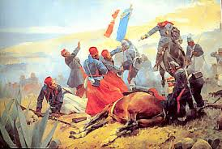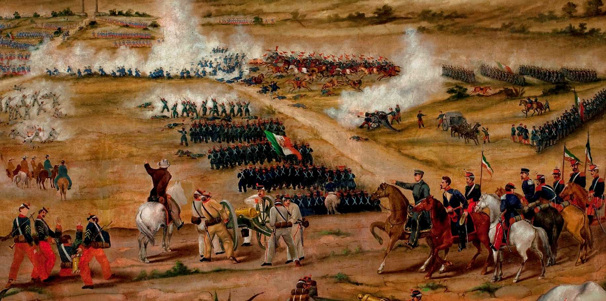
SUBTEMA 1.2
LLEGADA DE LA TROPA FRANCESA
Confiando Lorencez en esos planes, el día 19 de abril, a las tres de la tarde, marchó hacia el altiplano acompañado de Saligny y de Almonte. Con un contingente de 6,000 soldados bien dispuestos, Lorencez avanzó hacia Orizaba, llegando a Fortín a media tarde. Las hostilidades empezaban al rimper los franceses los tratados. Zaragoza, que estaba en Orizaba con 4,000 hombres y ocho cañones, se retiró hacia Las Cumbres, paso obligado hacia el altiplano. En Orizaba, Lorencez recibió nuevos refuerzos dirigidos por los coroneles L´Herillier y Gambier, quienes llevaron el peso de la primera fase de la campaña, y se aprestó a iniciar el ascenso hacia las grandes ciudades, Puebla y México. El 27 de abril por la mañana, acompañado por el ave negra de Saligny y por Almonte. Inició su marcha sobre Puebla. La víspera escribía, lleno de soberbio optimismo, al ministro de la Guerra párrafos reveladores del complejo de superioridad de todos los europeos.
Transponer Las Cumbres de Acultzino representó una primera etapa. Zaragoza se dispuso a hacerle frente, después de haber desviado a fuerzas reaccionarias de Zuloaga y otros jefes que venían a auxiliare a los franceses. Con 4,000 hombre, de los cuales sólo la mitad actuó, divididos en cinco brigadas de infantería, tres baterías de montaña de seis piezas y 200 caballeros, Zaragoza, auxiliado por el coronel Días, trató de impedir el avance del enemigo. Los batallones de cazadores, compañías de zuavos e infantes de marina lograron ampararse de varias alturas tras duros ataques a la bayoneta u desalojar a las fuerzas mexicanas, que se replegaron a San Agustín del Palmar. Los invasores penetraron hasta la Cañada de Ixtapan. El 1 de mayo, reunidos todos los contingentes y eufóricos antes las promesas de Saligny de que Puebla les recibirían con lluvia de flores, los invasores marchó hacia la ciudad de los Ángeles.
Zaragoza había reunido en Puebla a sus tropas, ordenado se levantaran barricadas en las calles y planeando hacer su defensa amparándose en tres eminencias que rodean la ciudad y en las que existían fortificaciones de cierta importancia: las de los cerros de San Juan, Guadalupe y Loreto. Sus tropas, cercanas a los 12,000 hombres debido a los refuerzos recibidos, estaban dirigidas por los gerentes, con 1,200 soldados y dos baterías de campaña, defendáis las alturas y fue quien llevó el peso de la batalla y a quien se debió el triunfo, auxiliado heroicamente por todo sus compañero, dirigidos certeramente por el general Ignacio Zaragoza.

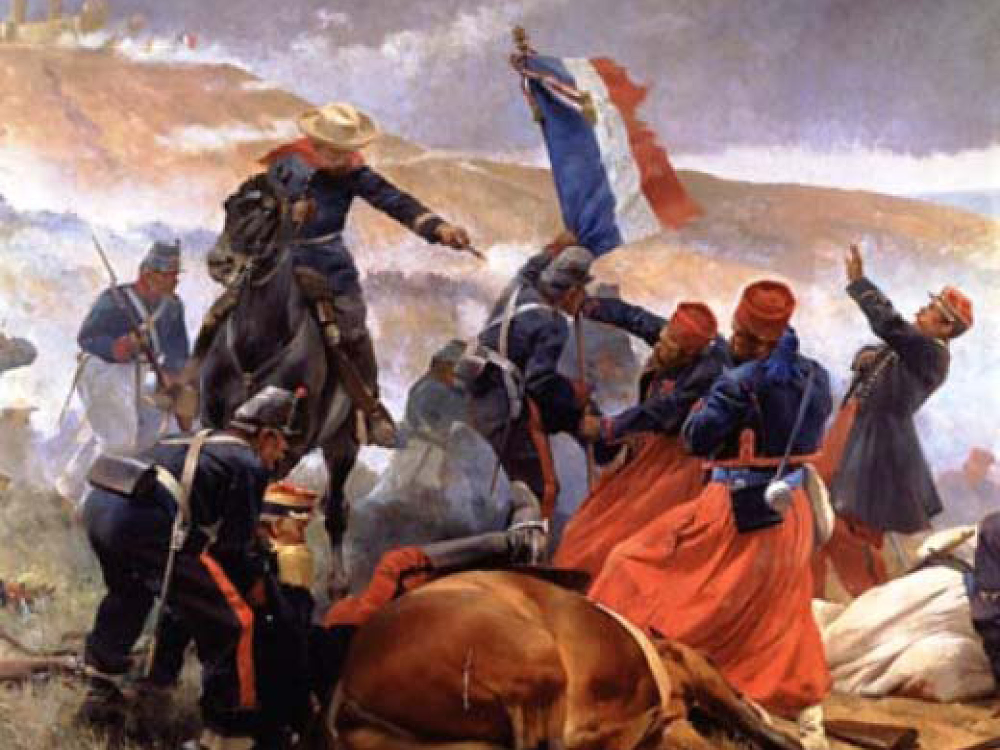
TEMA 2
LUGARES DE LA BATALLA
RESUMEN
Los fuertes de Loreto y Guadalupe son unas antiguas edificaciones militares que se encuentran en la ciudad de Puebla. Originalmente se trataba de capillas construidas en lo alto de un cerro Acueyametepec, que fueron reconstituidas a principios del siglo XIX como fortificaciones con finalidades militares. Sirvieron como escenario principal tanto en la batalla como en el sitio de Puebla, durante la Segunda Intervención Francesa en México. Declarados como patrimonio histórico de México, actualmente albergan museos de sitio.
En 1930 los fuertes y la zona aledaña al cerro fueron declarados propiedad de la nación al servicio al pueblo, y en Loreto se construyó un Museo de Guerra. En 1962, con motivo del centenario de la batalla, el museo se amplió y se dotó de servicios al área del parque. Actualmente, en la Zona Histórica de los Fuertes se ubican también un Museo Regional del Instituto Nacional de Antropología e Historia, el Auditorio de la Reforma y la Casa Puebla. Además, a un costado se ubica el Centro de Exposiciones de Puebla y un monumento donde reposan los restos de Ignacio Zaragoza y su esposa Rafael Padilla.
SUBTEMA 2.1
LORETO
Fuerte de Loreto tiene su origen en el Museo de Historia Guerrera, fundado en el año de 1936 por un grupo de ciudadanos poblanos preocupados por la conservación del patrimonio, encabezados por los señores Carlos y Ángel Paz y Puente, quedando este último como su responsable. En marzo de 1955 el gobierno del estado de Puebla se encarga de su administración y en el año de 1962 pasa a manos del INAH llamándose a partir de entonces Museo de la No Intervención, hasta este año de 2012 en que cambia de nombre.
La colección que actualmente se exhibe en el museo es básicamente la que los señores Paz y Puente recopilaron para crear el Museo de Historia Guerrera, enriquecida con algunas otras piezas de diferente origen. Otras piezas en exhibición son préstamos temporales de varios museos, entre ellos el Nacional de Historia, el Regional de Querétaro, el de Santa Mónica de Puebla, etc.
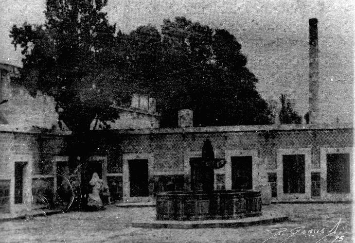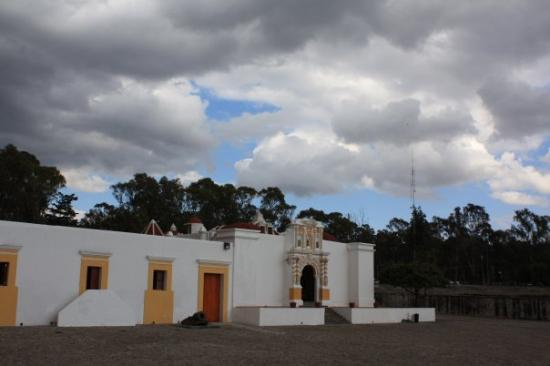
El Fuerte de Guadalupe no fue una fortificación militar de grandes dimensiones ya que el terreno mismo donde se asentaba no se prestaba para ello. Tenía únicamente dos pequeños baluartes y un sólo rediente que cubría la entrada. Se tuvo que echar abajo la iglesia y se hicieron repuestos subterráneos de bóveda y un aljibe. Exceptuando un parapeto de no más de un metro de espesor que se construyo a la carrera el 5 de mayo, todas las construcciones en este fuerte fueron nuevas.
Se encontraba a una distancia de 760 m. del Fuerte Independencia, a 928 mts. del Fuerte Loreto, a 2,024 mts. de la Garita “Veracruz” y a 2,216 mts. de la Catedral de la ciudad dePuebla.
Su guarnición y distribución de tropas (1ª División del General Berriozabal) correspondía a la asignada a una linea que comprendía el grupo de defensas (fuertes) de Loreto, Guadalupe y Misericordia. El Jefe de este Fuerte fue el General Gayoso y el Comandante de Artillería el Capitán 1º Luis F. López.
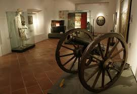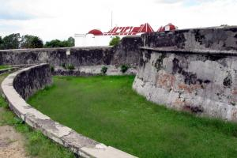
TEMA 3
MODO DE CELEBRAR
RESUMEN
La celebración aquí en Puebla se hace en grande , para empezar se abre la Feria de Mayo en Puebla a partir del 30 de Abril hasta el 30 de Mayo , en la Feria se podrán encontrar infinidad de cosas y juegos para todas las edades , con artistas famosos invitados para cada día que dure la Feria .
A partir del día 3 y 4 de Mayo empiezan a llegar estudiantes de todas partes del Estado de Puebla como Tehuacán , Tecamachalco , Tepeaca , Chignahuapan , Azúcar de Matamoros , Teziutlan , Ciudad Serdán entre otros lugares e incluso llegan de otros estados circunvecinos .
El día 5 de Mayo desde muy temprano se preparan todos. El año de 1999 se contó con la asistencia del Presidente de la República Ernesto Zedillo. A las 8:00 hrs miles de estudiantes y demás elementos que participaran en el desfile se dan cita en el lugar de inicio del desfile que es la esquina con Boulevard Valsequillo y Boulevard 5 de Mayo. Todas las calles aledañas serán ocupadas para formarse.
Estudiantes de todos los niveles de educación participaran, el desfile empezara a las 11:00 hrs (tiempo de la Ciudad de México) y se recorrerá todo el Boulevard 5 de Mayo hasta donde se encuentra la Cruz Roja, por la 22 Oriente. (Cabe hacer mención que es así cada año)
Miles de personas de reúnen en las calles por donde pasara el desfile. Este día no hay actividad alguna en toda la Ciudad. Las personas incluso pasan la noche en las calles para poder ver bien el desfile.
La Batalla de Atlixco tuvo lugar el 4 de mayo de 1862 en las inmediaciones de la Hacienda de las Traperas en Atlixco en el estado de Puebla, México, entre elementos del ejército mexicano de la república, al mando de los generales Antonio Carvajaly Tomás O'Horan contra las tropas al servicio del Segundo Imperio Mexicano comandadas por el general José María Cobosy de Leonardo Márquez, compuesta de soldados conservadores mexicanos en apoyo de envío de refuerzos para llevar a cabo la Batalla de Puebla, durante la Segunda Intervención Francesa en México.
SUBTEMA 3.1
4-MAYO EN ATLIXCO
La celebración aquí en atlixco se hace en grande , para empezar se abre la Feria de Mayo , en la Feria se podrán encontrar infinidad de cosas y juegos para todas las edades , con artistas famosos invitados para cada día que dure la Feria .
A partir del día 3 y 4 de Mayo empiezan a llegar estudiantes de todas partes del Estado de Puebla como Tehuacán , Tecamachalco , Tepeaca , Chignahuapan , Azúcar de Matamoros , Teziutlan , Ciudad Serdán entre otros lugares e incluso llegan de otros estados circunvecinos .
El día 4 de Mayo desde muy temprano se preparan todos. El año de 1999 se contó con la asistencia del Presidente de la República Ernesto Zedillo. A las 8:00 hrs miles de estudiantes y demás elementos que participaran en el desfile se dan cita en el lugar de inicio del desfile que es la esquina con Boulevard Valsequillo y Boulevard 4 de Mayo. Todas las calles aledañas serán ocupadas para formarse.
Estudiantes de todos los niveles de educación participaran, el desfile empezara a las 11:00 hrs (tiempo de la Ciudad de México) y se recorrerá todo el Boulevard 5 de Mayo hasta donde se encuentra la Cruz Roja, por la 22 Oriente. (Cabe hacer mención que es así cada año)
Miles de personas de reúnen en las calles por donde pasara el desfile. Este día no hay actividad alguna en toda la Ciudad. Las personas incluso pasan la noche en las calles para poder ver bien el desfile.
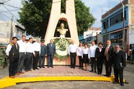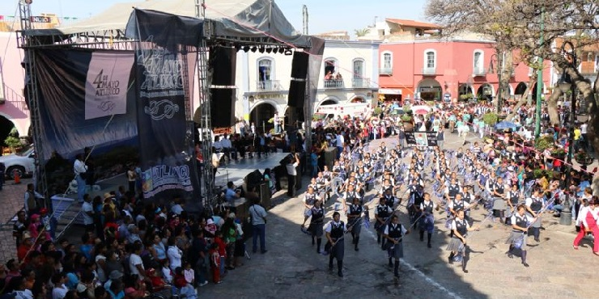
SUBTEMA 3.2
5-MAYO EN PUEBLA
La celebración aquí en Puebla se hace en grande , para empezar se abre la Feria de Mayo en Puebla a partir del 30 de Abril hasta el 30 de Mayo , en la Feria se podrán encontrar infinidad de cosas y juegos para todas las edades , con artistas famosos invitados para cada día que dure la Feria .
A partir del día 3 y 4 de Mayo empiezan a llegar estudiantes de todas partes del Estado de Puebla como Tehuacán , Tecamachalco , Tepeaca , Chignahuapan , Azúcar de Matamoros , Teziutlan , Ciudad Serdán entre otros lugares e incluso llegan de otros estados circunvecinos .
El día 5 de Mayo desde muy temprano se preparan todos. El año de 1999 se contó con la asistencia del Presidente de la República Ernesto Zedillo. A las 8:00 hrs miles de estudiantes y demás elementos que participaran en el desfile se dan cita en el lugar de inicio del desfile que es la esquina con Boulevard Valsequillo y Boulevard 5 de Mayo. Todas las calles aledañas serán ocupadas para formarse.
Estudiantes de todos los niveles de educación participaran, el desfile empezara a las 11:00 hrs (tiempo de la Ciudad de México) y se recorrerá todo el Boulevard 5 de Mayo hasta donde se encuentra la Cruz Roja, por la 22 Oriente. (Cabe hacer mención que es así cada año)
Miles de personas de reúnen en las calles por donde pasara el desfile. Este día no hay actividad alguna en toda la Ciudad. Las personas incluso pasan la noche en las calles para poder ver bien el desfile.
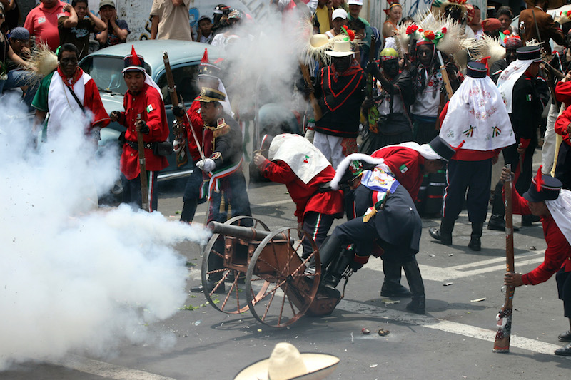